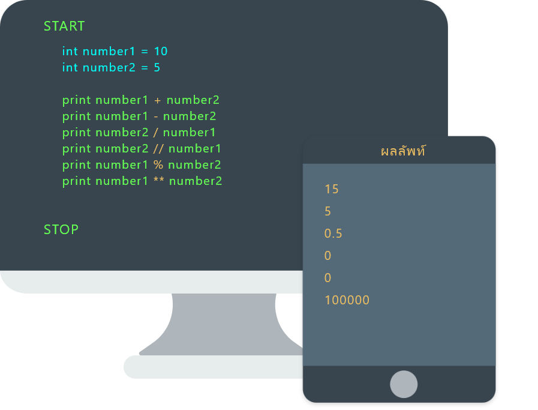

Calculation
เป็นการคำนวณทางด้านคณิตศาสตร์ โดยมีสัญลักษณ์พื้นฐานดังนี้
+ : บวก
- : ลบ
* : คูณ
/ : หาร
% : mod หรือ การหารเอาเศษ เช่น 5%2 = 1
// : หารไม่เอาเศษ หรือ ทศนิยม เช่น 5//2 = 2
** : ยกกำลัง
สัญลักษณ์เปรียบเทียบมากกว่า > น้อยกว่า เท่ากับ == ไม่เท่ากับ != มากกว่าหรือเท่ากับ >= น้อยกว่าหรือเท่ากับ
